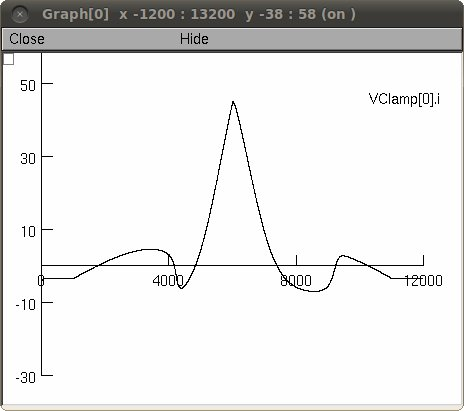
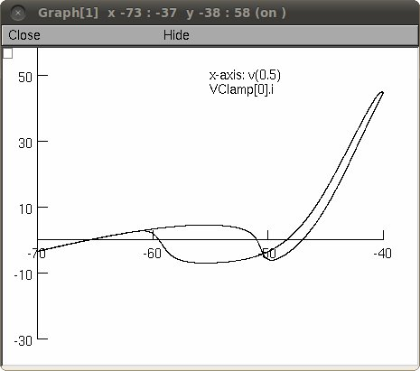

This is the README for the model associated with the paper Powers RK, ElBasiouny SM, Rymer WZ and Heckman CJ. Contributions of intrinsic properties and synaptic inputs to motoneuron discharge patterns: a simulation study. J Neurophys, 107:808-823, 2012. These files were contributed by Randy Powers. Usage: This archive contains all the files necessary to produce the responses of a medium threshold motoneuron to the triangular current-clamp, voltage-clamp and noisy conductance commands used in Powers et al. 2012. These simulations use and require that NEURON (http://www.neuron.yale.edu) is installed. The base code and mod files are in the subfolder "code". The files for initiating the simulations and for specifying the parameters for a medium threshold motoneuron are in the subfolder "MN_hoc_and_output". Either auto-launch from ModelDB or compile the mod files in the code folder with mknrndll (MacOS and mswin) or by typing "nrnivmodl code" (unix/linux). You can start the simulation by with either the mosinit.hoc file, init_synss.hoc, or init_gramp.hoc. The former allows you to select either of the latter by clicking a button. The file init_synss.hoc is used for current-clamp and voltage-clamp simulations, whereas init_gramp.hoc is used for the simulating responses to synaptic conductance commands. Upon running init_synss.hoc, the NEURON Main Menu and a window entitled "FR motoneuron control panel" will appear. Click the pick a file button and pick Medium_thresh_MN.hoc. Then click Exit on the file chooser. Then click the "Choose analysis" button and pick either FI for the current-clamp simulation or IV for the voltage-clamp simulation. If you click "GO" the "IV" simulation will generate Fig. 1E:  and Fig. 1F:  After the simulation is finished an output text file is generated that either lists injected current and spike time values (for current-clamp) or voltage command and voltage-clamp current values (for voltage clamp). For the voltage-clamp simulation you have the option of looking at the effects of tonic excitatory input, by clicking the enable synaptic input button. Upon running init_gramp.hoc you can record the responses to the various mixtures of excitatory and inhibitory input used in Powers et al. 2012 by executing the commands in the file gramp_commands.